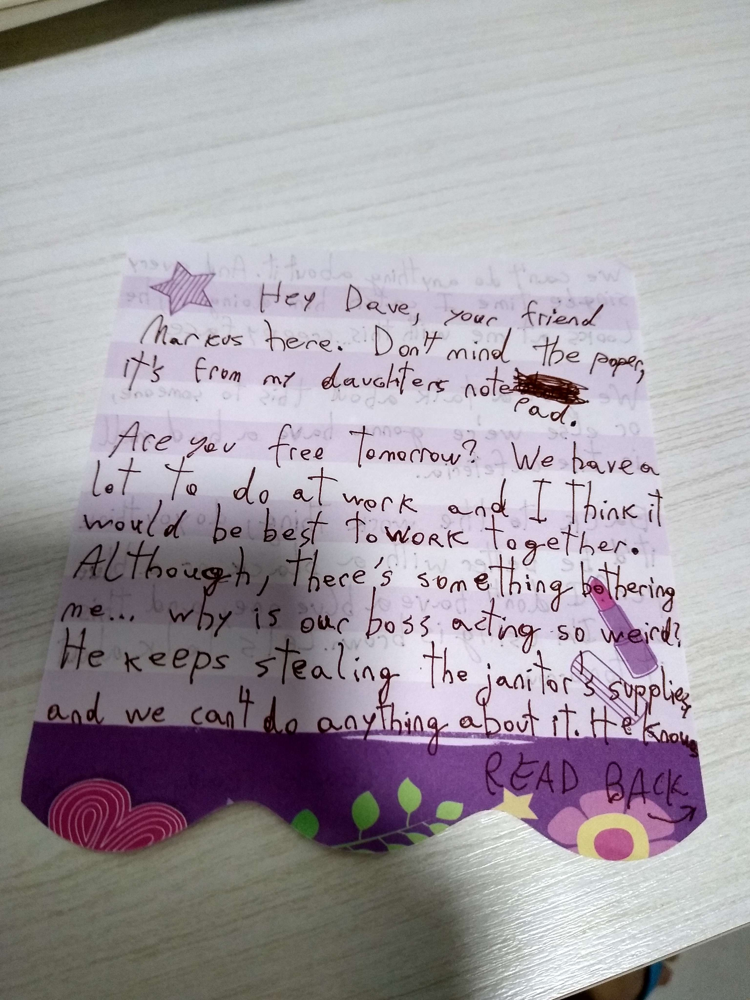

i cant believe im making a site for this HAHAHA
hello welcome to cases of missing people which I have neevr done and thi is my dads case!! say hello dad\!
hes been missing for about 32 years and i relly wanna find him so if anyone can help i'd appreciate it alot!
he was gonna send this note to one of his colleages back in 1977 but uhh it kinda never got there.... because ynow he DISSAPEARD


so at first i thought it was a normal note but LOOK! THERES SOMETHING ABOUT HIS BOSS STEALING JANITOR STUFFF!!!! WHAT IF the boss stole the stuff to kidnap my dad!! OMG I JUST HAD AN IDeA
what if my dad got kidnapped (i hope it''s kidnapped) by his boss because he found out he was stealing things?? but why would he steal tjings idk!
also heres his missing poster i managed to digitalize it dont ask how its my secret ;)
blurred out the address cuz i dont wanna get my address leaked to anyone haha
jeff logan redd is the boss's name by the way.... that's kind of suspiscious huhhmm
omg i just saw it why did i write "man with large closet" HAHAHAHAHA
anywaysies if you could help me i'd very much appreciatre it!! thats the only stuff i have yet soo.. STAY TUNED SUCKAS!